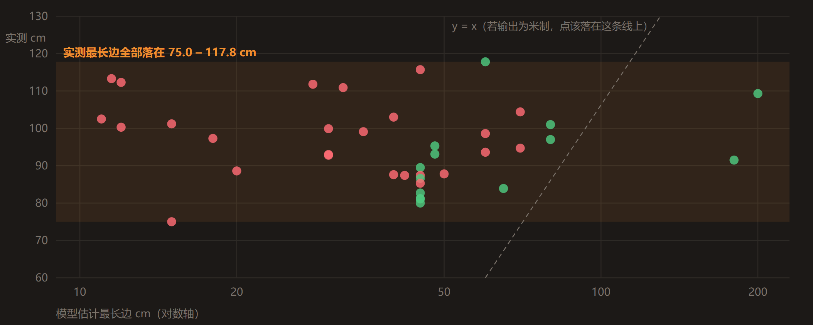
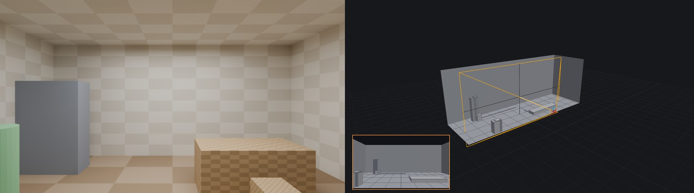

一张参考图 → 三维场景
同一个命题的三条独立实现，每个读数都写明它出自哪个文件。
拖动分割线：左为输入的参考照片，右为线 3 在 Blender 里重建的同机位渲染。
三条线各回答什么
| 线 1 · UE5 | 线 2 · three.js | 线 3 · Blender | |
|---|---|---|---|
| 回答的问题 | 能不能做出可交付的关卡 | 能不能变成一类场景的生成器 | 还原度的上限在哪 |
| 驱动方式 | 单向前馈：AI 出提案，规则裁决 | 目视驱动：挑最刺眼的改 | 度量驱动：先把像不像变成可测量的量 |
| 资产来源 | 39 模块库，四级瀑布匹配 | 代码运行时生成，零外部文件 | 39 模块库 + 参考图矫正回贴 |
| 参考图 | 室内机房 | 沙漠基地（另一张） | 室内机房（同线 1） |
| 运行环境 | UE 5.5 编辑器内嵌 Python | 浏览器 WebGL2 实时 | Blender 4.2 / Cycles 离线 |
同一张图，两条路

线 1 单向前馈：感知 → 布局 → 素材 → 匹配 → 装配，五阶段温缓存复跑实测 146.7 s，产物是能在引擎里打开的关卡。 它求的是可交付。线 3 允许无限循环：先把「像不像」变成可测量的量，再让「渲染 → 度量 → 定位病因 → 改」 去优化它。九步下来边缘 F 翻了一倍半，而同期 SSIM 几乎没动 —— 这条曲线本身就是 「SSIM 不能当目标函数」的实测反例。它求的是还原度上限。
线 3 的九步：从灰混凝土空盒，到完整的砖墙、海报与灯光。
calib.json 的 notes 里自己记着「无可信消失点对，退回 hfov 60° 先验」；
那一次自动解的置信度 0.12 落在 pipeline_log.jsonl 里 ——
calib.json 自己的 confidence 已经是 0.9，因为那是人工覆盖之后的那份。线 3 那份文档里另有三条作者自己的结论被后续测量推翻 —— 包括作为前提交出去、 结果被推翻的那条「存在系统性竖直偏移」—— 三条按原样保留在正文里，没有删。
另一张图，程序化生成


这条线不匹配资产库，几何与贴图全部运行时算出来，换个种子约四秒长出另一座基地。 它回答的不是「像不像这一张图」，而是「能不能长出一千张这样的图」。
被自己的测量推翻的那几条

线 1 缺的就是第四道：外参给完，没投影回参考图核对过。
最锋利的一条对照：同一张图、同一组内参、同一批资产，两条线的地平线落在差 91.0 px 的两行上， 解出的房间地面因此差 2.8 倍。
这两个数怎么自己核。地平线所在行 = c_y ± f_y·tan(pitch)。
process/run_fd6e434f/calib.json 给出 f_y 469.16、c_y 286
（图高 572 的一半）和线 1 的 pitch_deg −0.8：线 1 的地平线落在中线下
469.16 × tan 0.8° = 6.55 px；process/figures/tri/section_data.json 的
p3 = 10.2° 把线 3 的地平线放到中线上 469.16 × tan 10.2° = 84.42 px
（即第 286 − 84.42 = 201.58 行，与方法论那份表里印的同一个数逐位一致）。
两者相隔 6.55 + 84.42 = 90.97 px，就是上面那 91.0。线 1 那条还能反查：同一份
section_data.json 里 28 个 ground_ray 对象的「接触行 − 到地平线的距离」扣掉
roll −0.35° 后全落在 292.48–292.64，即第 292.55 行 = 286 + 6.55。
2.8 倍是地面面积比：process/figures/tri/vlm_pose_evidence.json 里
ue_room_cm 1083.8 × 723.3 cm（78.4 m²）比 bl_calib.room_m
3.95 × 7.00 m（27.7 m²），2.84。
两样能自己动手的东西

拖一张图进去，当场出可环绕的几何。全部推理在你的浏览器本地跑，图片不上传。
深度用 depth-anything-v2-small，只当序数用 ——
尺度另由地面自标定曲线定。几何求解是 whitebox-web/src/geometry/ 的
1 116 行 TypeScript（pipeline.ts 821 + calib.ts 295），
零模型调用：288 px 重采样栅格，远端截到 25 m。白盒可导出 GLB，拖进 Blender 自己量。
37.8 秒的剪辑，把五阶段串一遍。不是等速实录 —— 同一条管线温缓存复跑实测 146.7 s。
片尾卡指向的是交付工程包里的 PDF 与 md，与本站这三份文档不是同一批文件。
线 1 与线 3 的每个读数都来自仓库里的机器留痕（
run_summary.json、
scene_manifest.json、recon/data.json）。线 2 的构件数与 draw call 是个例外：
它们没有落盘文件，只有实时场景 HUD 的现场读数。本站由 GitHub Pages 从仓库根目录直接托管。
core/providers3d.py）不包含在内；库匹配路径与全部规则逻辑完整保留。
脱敏只涉及线 1 —— 线 2、线 3 与白盒 Live 不调用任何云服务：线 3 全程无云端调用、无 API Key，
线 2 外部模型与图片文件 0。因此 docs/ 与 pipeline/README.md 中仍有少量
指向 providers3d.py 的行号引用，属预期。